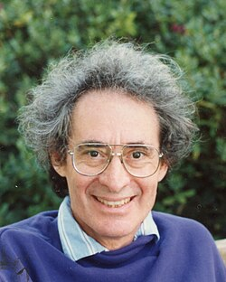

Barry Charles Mazur | |
|---|---|
 Mazur in 1992 | |
| Born | December 19, 1937 New York City, U.S. |
| Education | Massachusetts Institute of Technology Princeton University (PhD) |
| Known for | Diophantine geometry Generalized Schoenflies conjecture Artin–Mazur zeta function Eilenberg–Mazur swindle Fontaine–Mazur conjecture Mazur manifold Mazur's Conjecture B Mazur's control theorem Mazur's torsion theorem |
| Awards | Chern Medal (2022) National Medal of Science (2011) Chauvenet Prize (1994) Cole Prize (1982) Veblen Prize (1966) |
| Scientific career | |
| Fields | Mathematics |
| Institutions | Harvard University |
| Ralph Fox R. H. Bing | |
Doctoral students | |
Barry Charles Mazur (/ˈmeɪzər/;[1] born December 19, 1937) is an American mathematician and the Gerhard Gade university professor at Harvard University.[2] His contributions to mathematics include his contributions to Wiles's proof of Fermat's Last Theorem in number theory, Mazur's torsion theorem in arithmetic geometry, the Mazur swindle in geometric topology, and the Mazur manifold in differential topology.
Born in New York City, Mazur attended the Bronx High School of Science, and left after his junior year to attend MIT;[3] he did not graduate from the university on account of failing a then-present ROTC requirement. He was nonetheless accepted for graduate studies at Princeton University, where he received his PhD in mathematics in 1959 after completing a doctoral dissertation titled On embeddings of spheres.[4] Thus, his only academic degree is a PhD.[3] He then became a Junior Fellow at Harvard University from 1961 to 1964. He is the Gerhard Gade University Professor and a Senior Fellow at Harvard. He is the brother of Joseph Mazur and the father of Alexander J. Mazur.[5]
His early work was in geometric topology. In an elementary fashion, he proved the generalized Schoenflies conjecture (his complete proof required an additional result by Marston Morse), around the same time as Morton Brown. Both Brown and Mazur received the Veblen Prize for this achievement. He also discovered the Mazur manifold and the Mazur swindle.
His observations in the 1960s on analogies between primes and knots were taken up by others in the 1990s giving rise to the field of arithmetic topology.
Coming under the influence of Alexander Grothendieck's approach to algebraic geometry, he moved into areas of diophantine geometry. Mazur's torsion theorem, which gives a complete list of the possible torsion subgroups of elliptic curves over the rational numbers, is a deep and important result in the arithmetic of elliptic curves. Mazur's first proof of this theorem depended upon a complete analysis of the rational points on certain modular curves. This proof was carried in his seminal paper "Modular curves and the Eisenstein ideal". The ideas of this paper and Mazur's notion of Galois deformations were among the key ingredients in Wiles's proof of Fermat's Last Theorem. Mazur and Wiles had earlier worked together on the main conjecture of Iwasawa theory.
In an expository paper, Number Theory as Gadfly,[6] Mazur describes number theory as a field which
"produces, without effort, innumerable problems which have a sweet, innocent air about them, tempting flowers; and yet... number theory swarms with bugs, waiting to bite the tempted flower-lovers who, once bitten, are inspired to excesses of effort!"
He expanded his thoughts in the 2003 book Imagining Numbers[7] and Circles Disturbed, a collection of essays on mathematics and narrative that he edited with writer Apostolos Doxiadis.[2]
Mazur was elected to the American Academy of Arts and Sciences in 1978.[8] In 1982 he was elected a member of the National Academy of Sciences.[9] Mazur was elected to the American Philosophical Society in 2001,[10] and in 2012 he became a fellow of the American Mathematical Society.[11]
Mazur has received the Veblen Prize in geometry (1966), the Cole Prize in number theory (1982), the Chauvenet Prize for exposition (1994),[6] and the Steele Prize for seminal contribution to research (2000) from the American Mathematical Society. In early 2013, he was presented with one of the 2011 National Medals of Science by President Barack Obama.[12] In 2022, he was awarded the Chern Medal for outstanding lifelong achievement in mathematics.[13]
.jpg){kind=link}